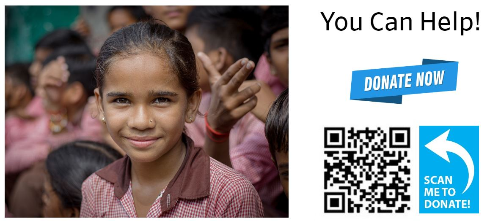

Percentage Children suffering exactly two deprivation
Khaman Singh - 22266466 - Assignment 2 - MT5000
World Map of Percentage Children suffering exactly two deprivation.
Sub saharan African countries are most prone to children suffering from deprivation.
Poverty in Children
- Children suffering from two deprivation are likely to suffer from physical and psychological health problems.
- They may experience difficulty in acquiring adequate nutrition, shelter, education, and access to health care services.
- They are more likely to experience social exclusion, which can have a negative impact on their self-esteem and emotional wellbeing.
- They may also have poor academic performance, increased risk of substance abuse, and increased risk of criminal behavior.
Bar Chart of Percentage Children suffering exactly two deprivation in Unicef Indicator 1.
Year 2014 saw the highest observed values of sum of percentage of children suffering exactly two deprivation
Scatter Plot of Children Suffering exactly two deprications
Scatterplot Figure.
Focus on Uganda
Line Graph
Line Graph of children suffering from poverty
How Children suffering from Deprivation can be saved:
Provide Access to Education: Education is one of the most important ways to empower children and break the cycle of poverty and deprivation. Invest in educational infrastructure and initiatives that provide access to education for all children in the area.
Improve Nutrition and Health Care: Make sure children have access to nutritious food and health care services. Implement programs that provide free or subsidized meals, as well as promote health and nutrition education.
Provide Basic Needs: Ensure that children have access to basic needs such as clean water, sanitation, and shelter. Invest in resources that give children and families access to these basic needs.
Combat Exploitation: Ensure that children are not exploited by providing resources and services that protect them from exploitation and abuse.
Strengthen Families and Communities: Strengthen families and communities by investing in initiatives that provide access to resources, job opportunities, and community development. These initiatives can help break the cycle of poverty and deprivation.
“Donate Now to Give Children a Brighter Future!”
